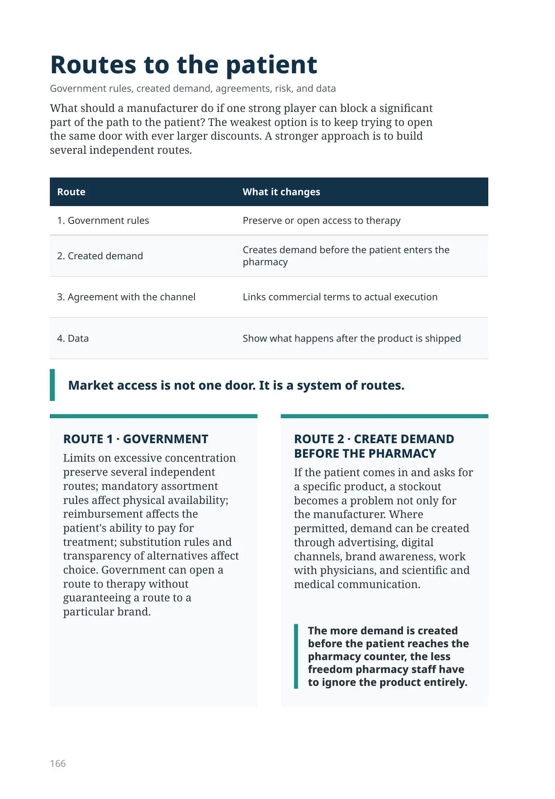
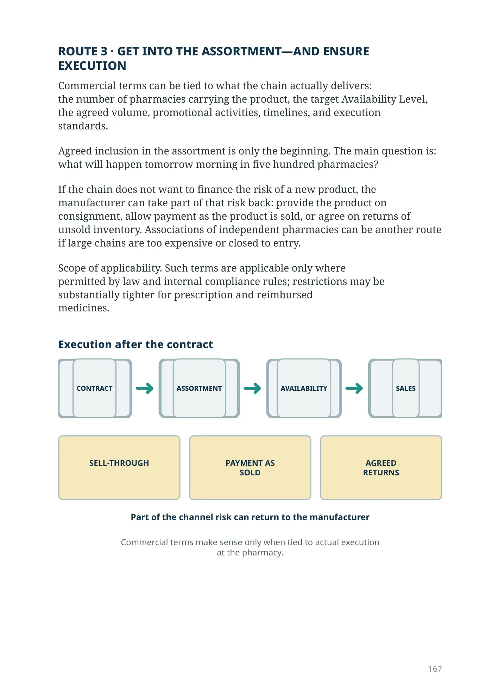
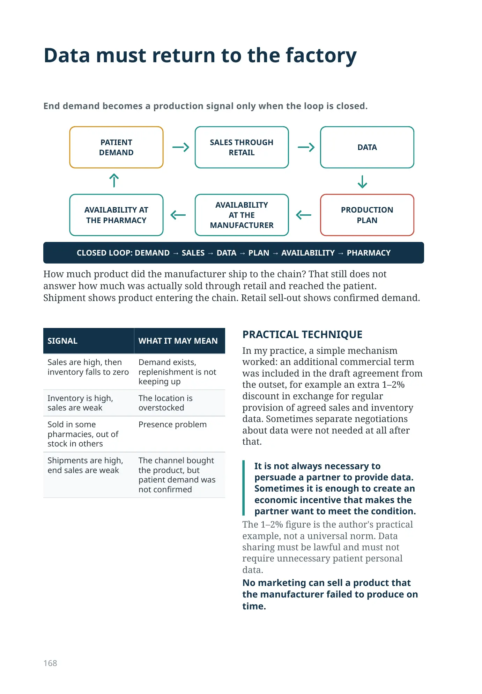
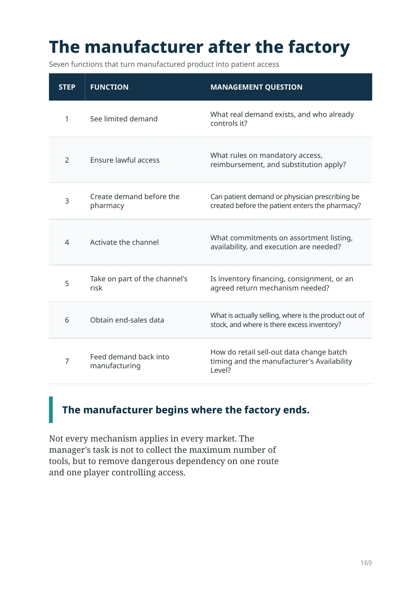
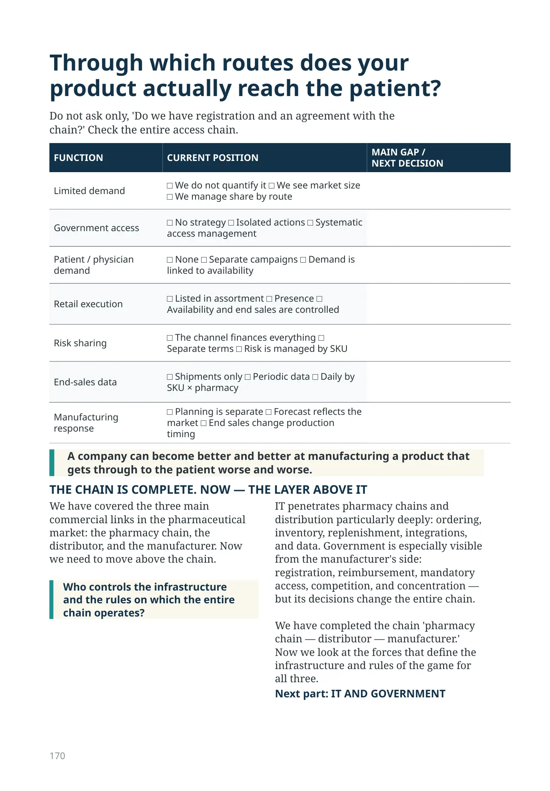
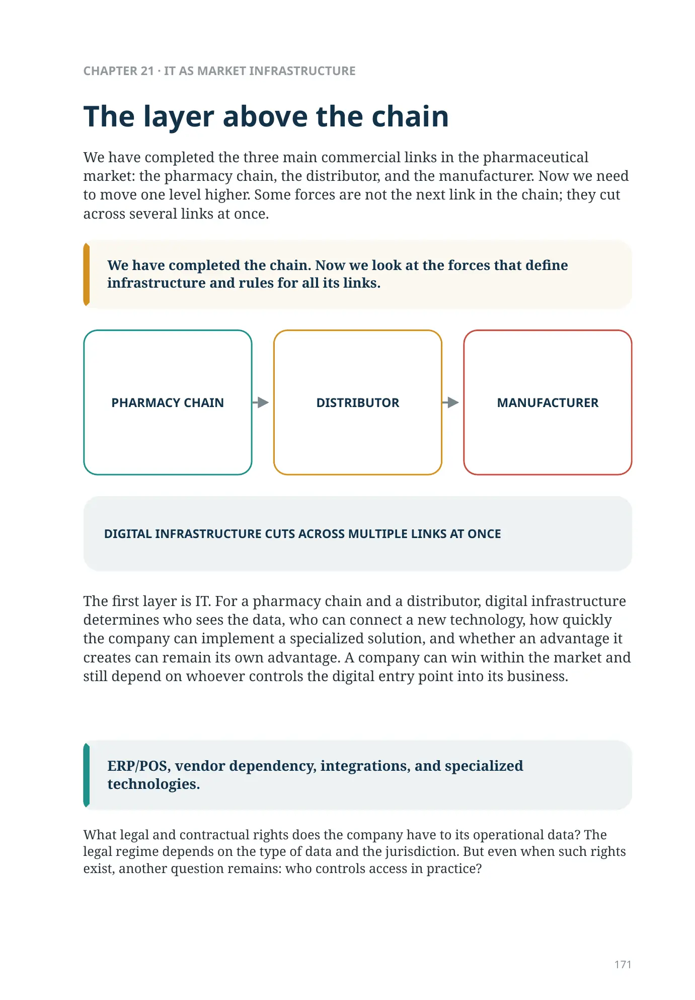
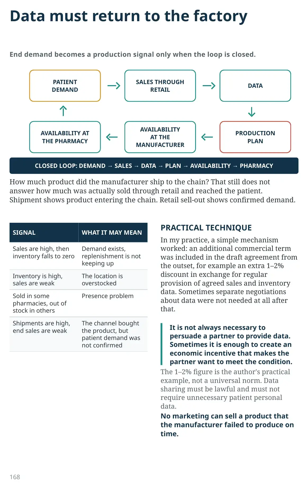

Routes to the patient
Government rules, created demand, agreements, risk, and data
What should a manufacturer do if one strong player can block a significant part of the path to the patient? The weakest option is to keep trying to open the same door with ever larger discounts. A stronger approach is to build several independent routes.
| Route | What it changes |
|---|---|
| 1. Government rules | Preserve or open access to therapy |
| 2. Created demand | Creates demand before the patient enters the pharmacy |
| 3. Agreement with the channel | Links commercial terms to actual execution |
| 4. Data | Show what happens after the product is shipped |
Market access is not one door. It is a system of routes.
ROUTE 1 · GOVERNMENT
Limits on excessive concentration preserve several independent routes; mandatory assortment rules affect physical availability; reimbursement affects the patient's ability to pay for treatment; substitution rules and transparency of alternatives affect choice. Government can open a route to therapy without guaranteeing a route to a particular brand.
ROUTE 2 · CREATE DEMAND BEFORE THE PHARMACY
If the patient comes in and asks for a specific product, a stockout becomes a problem not only for the manufacturer. Where permitted, demand can be created through advertising, digital channels, brand awareness, work with physicians, and scientific and medical communication.
The more demand is created before the patient reaches the pharmacy counter, the less freedom pharmacy staff have to ignore the product entirely.
ROUTE 3 · GET INTO THE ASSORTMENT—AND ENSURE
EXECUTION
Commercial terms can be tied to what the chain actually delivers:
the number of pharmacies carrying the product, the target Availability Level,
the agreed volume, promotional activities, timelines, and execution
standards.
Agreed inclusion in the assortment is only the beginning. The main question is: what will happen tomorrow morning in five hundred pharmacies?
If the chain does not want to finance the risk of a new product, the manufacturer can take part of that risk back: provide the product on consignment, allow payment as the product is sold, or agree on returns of unsold inventory. Associations of independent pharmacies can be another route if large chains are too expensive or closed to entry.
Scope of applicability. Such terms are applicable only where
permitted by law and internal compliance rules; restrictions may be
substantially tighter for prescription and reimbursed
medicines.
at the pharmacy.

Data must return to the factory
DEMAND
RETAIL
THE PHARMACY
AT THE MANUFACTURER
PLAN
How much product did the manufacturer ship to the chain? That still does not answer how much was actually sold through retail and reached the patient. Shipment shows product entering the chain. Retail sell-out shows confirmed demand.
| SIGNAL | WHAT IT MAY MEAN |
|---|---|
| Sales are high, then inventory falls to zero | Demand exists, replenishment is not keeping up |
| Inventory is high, sales are weak | The location is overstocked |
| Sold in some pharmacies, out of stock in others | Presence problem |
| Shipments are high, end sales are weak | The channel bought the product, but patient demand was not confirmed |
PRACTICAL TECHNIQUE
In my practice, a simple mechanism worked: an additional commercial term was included in the draft agreement from the outset, for example an extra 1–2% discount in exchange for regular provision of agreed sales and inventory data. Sometimes separate negotiations about data were not needed at all after that.
It is not always necessary to persuade a partner to provide data. Sometimes it is enough to create an economic incentive that makes the partner want to meet the condition.
The 1–2% figure is the author's practical example, not a universal norm. Data sharing must be lawful and must not require unnecessary patient personal data.
No marketing can sell a product that the manufacturer failed to produce on time.
The manufacturer after the factory
Seven functions that turn manufactured product into patient access
| STEP | FUNCTION | MANAGEMENT QUESTION |
|---|---|---|
| 1 | See limited demand | What real demand exists, and who already controls it? |
| 2 | Ensure lawful access | What rules on mandatory access, reimbursement, and substitution apply? |
| 3 | Create demand before the pharmacy | Can patient demand or physician prescribing be created before the patient enters the pharmacy? |
| 4 | Activate the channel | What commitments on assortment listing, availability, and execution are needed? |
| 5 | Take on part of the channel's risk | Is inventory financing, consignment, or an agreed return mechanism needed? |
| 6 | Obtain end-sales data | What is actually selling, where is the product out of stock, and where is there excess inventory? |
| 7 | Feed demand back into manufacturing | How do retail sell-out data change batch timing and the manufacturer's Availability Level? |
The manufacturer begins where the factory ends.
Not every mechanism applies in every market. The manager's task is not to collect the maximum number of tools, but to remove dangerous dependency on one route and one player controlling access.
Through which routes does your product actually reach the patient?
Do not ask only, 'Do we have registration and an agreement with the chain?' Check the entire access chain.
| FUNCTION | CURRENT POSITION | MAIN GAP / NEXT DECISION |
|---|---|---|
| Limited demand | □ We do not quantify it □ We see market size □ We manage share by route | |
| Government access | □ No strategy □ Isolated actions □ Systematic access management | |
| Patient / physician demand | □ None □ Separate campaigns □ Demand is linked to availability | |
| Retail execution | □ Listed in assortment □ Presence □ Availability and end sales are controlled | |
| Risk sharing | □ The channel finances everything □ Separate terms □ Risk is managed by SKU | |
| End-sales data | □ Shipments only □ Periodic data □ Daily by SKU × pharmacy | |
| Manufacturing response | □ Planning is separate □ Forecast reflects the market □ End sales change production timing |
A company can become better and better at manufacturing a product that gets through to the patient worse and worse.
THE CHAIN IS COMPLETE. NOW — THE LAYER ABOVE IT
We have covered the three main commercial links in the pharmaceutical market: the pharmacy chain, the distributor, and the manufacturer. Now we need to move above the chain.
Who controls the infrastructure and the rules on which the entire chain operates?
IT penetrates pharmacy chains and distribution particularly deeply: ordering, inventory, replenishment, integrations, and data. Government is especially visible from the manufacturer's side: registration, reimbursement, mandatory access, competition, and concentration — but its decisions change the entire chain.
We have completed the chain 'pharmacy chain — distributor — manufacturer.' Now we look at the forces that define the infrastructure and rules of the game for all three.
Next part: IT AND GOVERNMENT